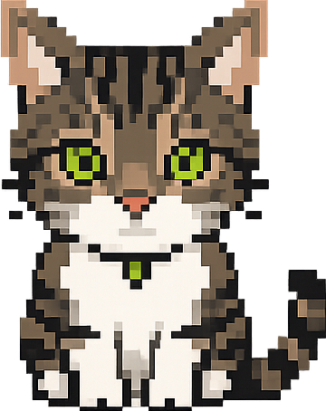

Lorenzo Doneddu
Sviluppatore web. Risolvo problemi che ancora non sai di avere.

Codice pulito. Idee sporche. Risultati netti.
Sono Lorenzo Doneddu, sviluppatore web di Roma con più di due anni di esperienza sul campo. Sin dalle elementari partecipavo a gare di logica — e da allora non ho mai smesso di stressare il cervello per trovare soluzioni.
Ho scelto questo lavoro perché l'ho sempre considerato il lavoro del futuro. Oggi lo è davvero, e io sono già qui.
Lavoro su WordPress, WooCommerce, PHP, JavaScript e molto altro — ma quello che mi entusiasma davvero non è la tecnologia in sé: è il momento in cui un problema difficile diventa una soluzione elegante.
Quando non sono davanti al monitor, sono davanti a uno schermo — che sia FC26, una partita della Roma o dei Sixers, poco cambia. Lo schermo vince sempre.
Il laboratorio.
Da MVC ho sperimentato tutto — web, mobile, backend, computer vision. Lavoravo spesso in autonomia su progetti molto diversi tra loro, il che mi ha costretto a imparare velocemente e ad arrangiarmi su qualsiasi problema.
Ho toccato tecnologie che vanno ben oltre il web classico: dal riconoscimento immagini con Python e modelli di machine learning, allo sviluppo di applicazioni mobile cross-platform, fino ad Angular e Flask. Ogni progetto era un territorio nuovo da esplorare.
Il salto professionale.
Da ITALA ho imparato cosa significa lavorare in un contesto strutturato: team, clienti reali, processi, responsabilità. Gestisco e sviluppo siti per un portfolio clienti eterogeneo — editori, ristoranti, gioiellerie, parcheggi, studi professionali — adattando ogni soluzione al contesto specifico.
Ho integrato pagamenti online con PayPal Advanced Checkout in PHP e JavaScript, gestisco la manutenzione continuativa su oltre 50 siti attivi e sviluppo nuove feature su gestionali esistenti. Lavoro quotidianamente con WordPress, PHP, HTML, CSS, JavaScript, jQuery, SQL e AJAX, collaborando con team di grafica e project management.